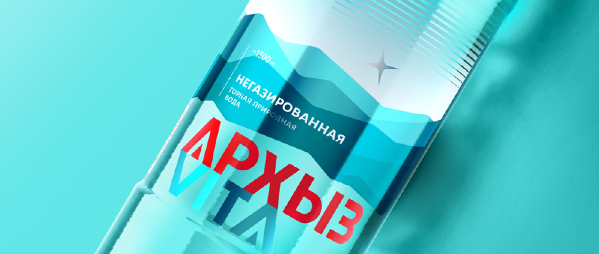
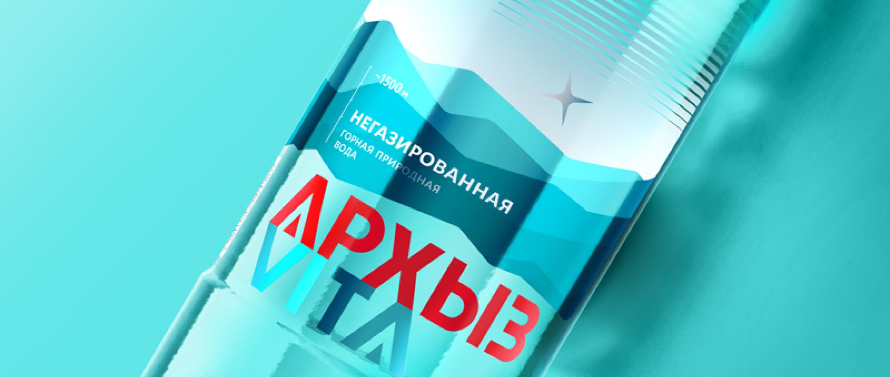
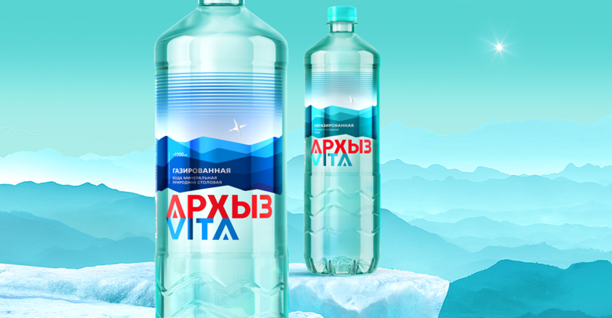
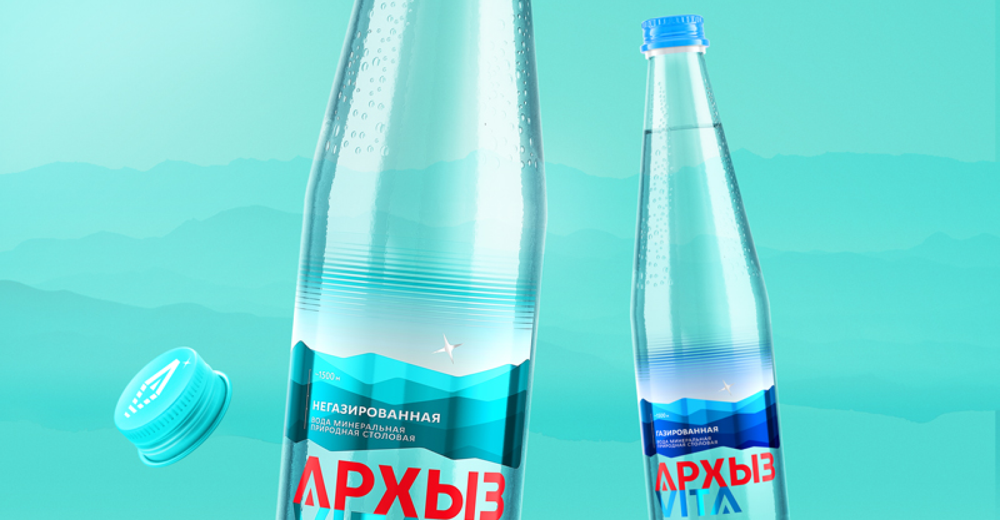

Перед нами стояла задача обновить бренд, не потеряв его суть и ценность. Ведь сам продукт, существующий на протяжении 20 лет, не изменился, вода сохранила свой уникальный состав
12 февраля
 2634

2634

Далее идет пример нумерованного списка:
Ребрендинг «Архыз Vita»: звезды, до которых можно дотянуться рукой
2634
Бренд минеральной воды как квинтэссенция места силы на Кавказе
Темпы роста рынка бутилированной воды в России создали все условия для появления десятков новых брендов на полках ритейла. Перезапуск популярной питьевой воды «Архыз Vita», основанной в 2000-х годах, осложнялся не только отсутствием направленной коммуникации в последние 3 года, но и появлением конкурента со схожим названием. На использование такого названия новый бренд имел все основания (по праву наименования места происхождения товара), ведь источник находился на другой площадке ниже. «Новый» бренд выстраивал мощную коммуникацию, позиционируя себя на территории активного образа жизни. Помимо этого, появились производители, которые копировали элементы дизайна или даже визуальный образ в целом. Несмотря на это, оригинальный «Архыз Vita» сохранил хорошую узнаваемость, и лояльная аудитория находила воду по узнаваемому оригинальному бирюзовому цвету бутылки.
 Надо отметить, что у руководства компании не было сомнений в необходимости ребрендинга. Ее слова дополняет директор по маркетингу ООО «ТД Дельта»Задача и решение
Обновить платформу бренда, позиционирование и коммуникационную стратегию исходя из сложившейся ситуации, чтобы дифференцироваться от конкурентов, расширить аудиторию. Разработать новый современный дизайн упаковки и разнести его на большое количество SKU. Архыз – заповедная часть Карачаево-Черкесии. Одно из самых чистых мест Северного Кавказа. Это особо охраняемая зона Тебердинского биосферного заповедника — ещё с начала прошлого века сюда приезжают люди для восстановления сил. Источники целебной воды, чистейший воздух и нетронутая природа создали то место, где люди ощущают гармонию с собой и природой. Здесь особое место и особенно чистый воздух, недаром здесь стоит высокогорная обсерватория. Напомним, что уникальности бренду «Архыз Vita» добавляет и то, что скважина находится на высоте 1465 метров, и это единственная вода в России, которая добывается на таком уровне.
 Вода добывается из ледника, содержит талую воду кавказских ледников и не соприкасается с грунтовыми водами. Для этой воды характерен низкий уровень минерализации, мягкий вкус и бактериологическая чистота.Далее идет пример нумерованного списка:
- Архыз Vita» является тем самым настоящим «Архызом Vita», который появился на рынке первым
- Ответ на запрос аудитории на перезагрузку, на потребность в чистой воде из уникальных мест
- Уникальный цвет бутылки и цвет логотипа
- Архыз Vita» является тем самым настоящим «Архызом Vita», который появился на рынке первым
- Ответ на запрос аудитории на перезагрузку, на потребность в чистой воде из уникальных мест
- Уникальный цвет бутылки и цвет логотипа
Как поведёт себя бренд в дальнейшем, конечно, зависит от большой работы по продвижению. Впереди рекламные кампании, работа с сетями и потребителями.
Мы верим в успех и новую жизнь «Архыз VITA»
У нас было совершенно четкое понимание, для чего мы должны измениться. Это «измениться» мы решили реализовать через ребрендинг. И совершенно очевидно, что простое изменение дизайна – это не наш путь, нам необходимо менять всю стратегию поведения компании, повернуться лицом к потребителям, говорить с ними